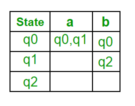
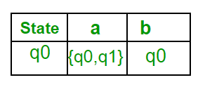
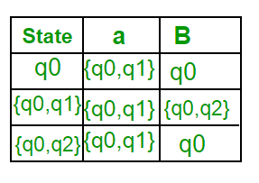
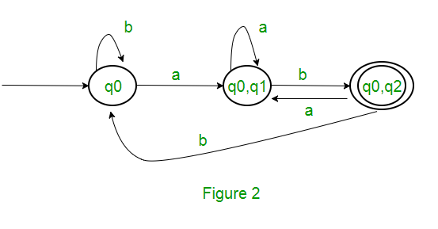
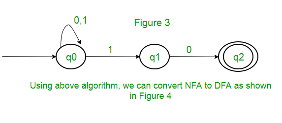
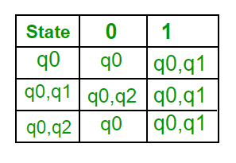
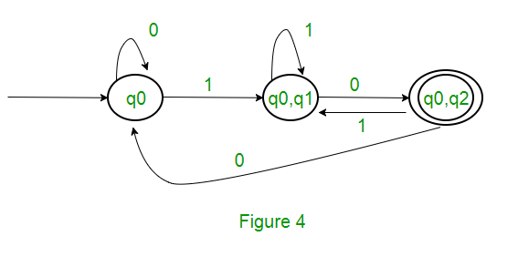

Definition of Finite Automata
A finite automaton (FA) is a simple idealized machine used to recognize patterns within input taken from some character set (or alphabet) C. The job of an FA is to accept or reject an input depending on whether the pattern defined by the FA occurs in the input. A finite automaton consists of: a finite set S of N states a special start state a set of final (or accepting) states a set of transitions T from one state to another, labeled with chars in C As noted above, we can represent a FA graphically, with nodes for states, and arcs for transitions. We execute our FA on an input sequence as follows: Begin in the start state If the next input char matches the label on a transition from the current state to a new state, go to that new state Continue making transitions on each input char If no move is possible, then stop If in accepting state, then accept.
A finite automata consist of the following:
Deterministic Finite Automata (DFA)
In a DFA, for a particular input character, the machine goes to one state only. A transition function is defined on every state for every input symbol. Also in DFA null (or ε) move is not allowed, i.e., DFA cannot change state without any input character.
For example, below DFA with ∑ = {0, 1} accepts all strings ending with 0.

DFA consists of 5 tuples {Q, ∑, q, F, δ}.
DFA for (1|0)*11
Deterministic finite automaton test program
w = F =Logic
| 0 | 1 | |
|---|---|---|
| > A | A | B |
| B | C | B |
| * C | A | B |
Nondeterministic Finite Automata (NFA)
NFA is similar to DFA except following additional features:
1. Null (or ε) move is allowed i.e., it can move forward without reading symbols.
2. Ability to transmit to any number of states for a particular input.
However, these above features don’t add any power to NFA. If we compare both in terms of power, both are equivalent. Due to above additional features, NFA has a different transition function, rest is same as DFA.δ: Transition Function
δ: Q X (∑ U ϵ ) --> 2 ^ Q.
NFA and DFA for (1|0)*00
Non-deterministic finite automaton
w = F =Deterministic finite automaton
w = F =Non-deterministic Logic
| 0 | 1 | |
|---|---|---|
| > a | ab | a |
| b | c | ϕ |
| * c | ϕ | ϕ |
Deterministic Logic
| 0 | 1 | |
|---|---|---|
| > D | E | D |
| E | F | D |
| * F | F | D |
Non-deterministic Methods
function delta(q, c) { // (1|0)*00
if (q == 'a' && c == '0') return 'ab'
if (q == 'a' && c == '1') return 'a'
if (q == 'b' && c == '0') return 'c'
return ''; //default -- no transition
}
function accept(w, F = 'c', Q = 'a') {
//w: input String
//F: final state(s)
//Q: current state(s)
let i = 0, txt = Q
while (i < w.length) {
let c = w[i], T = ''
for (let q of Q)
T = union(T, delta(q, c))
Q = T
if (Q == '') break
i++; txt += ", " + c + " -> " + Q + '\n' + Q
}
input.selectionStart = i
input.selectionEnd = i + 1
return intersect(Q, F).length > 0
}
Deterministic Methods
function delta2(q, c) { // (1|0)*10
if (q == 'D' && c == '0') return 'E'
if (q == 'E' && c == '0') return 'F'
if (q == 'F' && c == '0') return 'F'
if (c == '1') return 'D'
return ''; //default -- no transition
}
function accept2(w, F = 'F', q = 'D') {
//w: input String
//F: final state(s)
//q: current state
let i = 0, txt = q
while (i < w.length) {
q = delta2(q, w[i])
if (q == '') break
i++; txt += " -> " + q
}
input.selectionStart = i
input.selectionEnd = i + 1
return (q != '' && F.includes(q))
}
Conversion NFA to DFA
Suppose there is an NFA N < Q, ∑, q0, δ, F > which recognizes a language L. Then the DFA D < Q’, ∑, q0, δ’, F’ > can be constructed for language L as:
Step 1: Initially Q’ = ɸ.
Step 2: Add q0 to Q’.
Step 3: For each state in Q’, find the possible set of states for each input symbol using transition function of NFA. If this set of states is not in Q’, add it to Q’.
Step 4: Final state of DFA will be all states with contain F (final states of NFA)
Example
Consider the following NFA shown in Figure 1.

Following are the various parameters for NFA. Q = { q0, q1, q2 } ∑ = ( a, b ) F = { q2 } δ (Transition Function of NFA)
Step 1: Q’ = ɸ Step 2: Q’ = {q0} Step 3: For each state in Q’, find the states for each input symbol. Currently, state in Q’ is q0, find moves from q0 on input symbol a and b using transition function of NFA and update the transition table of DFA. δ’ (Transition Function of DFA)
Now { q0, q1 } will be considered as a single state. As its entry is not in Q’, add it to Q’. So Q’ = { q0, { q0, q1 } }
Now, moves from state { q0, q1 } on different input symbols are not present in transition table of DFA, we will calculate it like: δ’ ( { q0, q1 }, a ) = δ ( q0, a ) ∪ δ ( q1, a ) = { q0, q1 } δ’ ( { q0, q1 }, b ) = δ ( q0, b ) ∪ δ ( q1, b ) = { q0, q2 } Now we will update the transition table of DFA.
δ’ (Transition Function of DFA)

Now { q0, q2 } will be considered as a single state. As its entry is not in Q’, add it to Q’.
So Q’ = { q0, { q0, q1 }, { q0, q2 } }
Now, moves from state {q0, q2} on different input symbols are not present in transition table of DFA, we will calculate it like: δ’ ( { q0, q2 }, a ) = δ ( q0, a ) ∪ δ ( q2, a ) = { q0, q1 } δ’ ( { q0, q2 }, b ) = δ ( q0, b ) ∪ δ ( q2, b ) = { q0 } Now we will update the transition table of DFA.
δ’ (Transition Function of DFA)
As there is no new state generated, we are done with the conversion. Final state of DFA will be state which has q2 as its component i.e., { q0, q2 }
Following are the various parameters for DFA.
Q’ = { q0, { q0, q1 }, { q0, q2 } } ∑ = ( a, b ) F = { { q0, q2 } } and transition function δ’ as shown above. The final DFA for above NFA has been shown in Figure 2.
Note : Sometimes, it is not easy to convert regular expression to DFA. First you can convert regular expression to NFA and then NFA to DFA.
Question : The number of states in the minimal deterministic finite automaton corresponding to the regular expression (0 + 1)* (10) is ____________. Solution : First, we will make an NFA for the above expression. To make an NFA for (0 + 1)*, NFA will be in same state q0 on input symbol 0 or 1. Then for concatenation, we will add two moves (q0 to q1 for 1 and q1 to q2 for 0) as shown in Figure 3.

